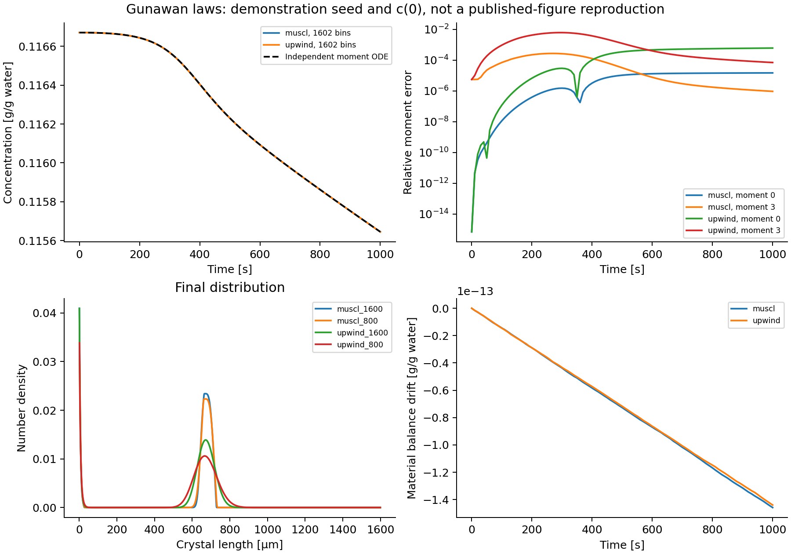

Gunawan: cooling crystallization
Coupled equations
Example 2 in Gunawan, Fusman, and Braatz (2004) models nucleation and size-dependent growth driven by a changing dissolved concentration and a prescribed cooling trajectory:
\[\frac{\partial n(L,t)}{\partial t} +\frac{\partial [G(L,c(t),T(t))n(L,t)]}{\partial L} =B_0(c(t),T(t))\delta(L),\]
\[G(L,c,T)=k_g\left[\frac{c-c_{\mathrm{sat}}(T)}{c_{\mathrm{sat}}(T)}\right]^g(1+0.1L), \qquad B_0=k_b\left[\int_0^\infty L^3 n(L,t)\,dL\right] \left[\frac{c-c_{\mathrm{sat}}(T)}{c_{\mathrm{sat}}(T)}\right]^b,\]
\[\frac{dc(t)}{dt}=-3\rho_c\int_0^\infty G(L,c(t),T(t))L^2n(L,t)\,dL.\]
Lengths are micrometers, time is seconds, and concentration is grams of solute per gram of water. The crystal density is $2.11\times10^{-12}$ g/µm³ and the paper's shape convention is $V=\int L^3n\,dL$; no extra spherical factor is added. The kinetics use $k_b=4.64\times10^{-7}$, $b=1.78$, $k_g=116$, and $g=1.32$. The recipe sets growth and nucleation to zero outside supersaturation; these fractional-power laws do not specify a dissolution branch.
\[T(t)=32-4(1-e^{-t/18600}),\qquad c_{\mathrm{sat}}(T)=1.721\times10^{-4}T^2-5.88\times10^{-3}T+0.1286.\]
Initial data and the reproduction limit
Equation 34 prints the seed polynomial
\[n(L,0)=-3.48\times10^{-4}L^2+0.136L-13.3, \qquad 180.5\le L\le210.5.\]
At that precision its maximum is approximately -0.01264368, so it cannot be used as a nonnegative population. Clipping produces an empty seed and changes secondary nucleation. The published case description also does not specify an unambiguous initial dissolved concentration. The builder therefore requires initial_density and c0; it does not silently repair the polynomial.
The executable comparison uses the explicitly chosen seed $0.08[1-((L-195.5)/15)^2]$ on that support, and $c(0)=c_{\mathrm{sat}}(32)$. It now runs to the paper's 1000-second horizon. These inputs support a numerical coupling/refinement study, not reproduction of the published CSD or error table. The paper's comparison also used HR1 and Lax–Wendroff, which are not provided by the current package.
Code deployment and term treatment
examples/papers/gunawan2004_case2.jl contains the reusable builder. It declares nucleation explicitly as a named term, separately from growth:
model = PBMModel(
growth=Growth(rate=G),
nucleation=Nucleation(rate=J,size=0.0),
)
methods = TermMethods(growth=MUSCL(),
by_term=(nucleation=BoundaryInjection(:left),))
operator = compile(model,grid;methods,bc=SizeBC(NoFlux(),NoFlux()))
system = PBMSystem((crystals=operator,);
fields=(p,t)->(T=temperature(t),),
nonnegative_bulk=(:c,),
exchanges=(ConservativeExchange(:crystals,:c,
(L,p,t,ctx)->p.rho*L^3; mechanisms=(:growth,:nucleation)),))G(L,p,t,ctx) reads the current ctx.bulk.c; J(p,t,ctx) reads that concentration and moment(ctx.system,:crystals,3). Temperature is a prescribed field, while concentration is a state advanced with the distribution at every SSPRK stage. The grid must start at zero for the boundary source.
The number influx $G(0,t)n(0,t)=B_0(t)$ is deposited without dividing by growth. The exchange uses the selected discrete growth and nucleation residuals with weight $\rho_cL^3$. Therefore it preserves the discrete dissolved-plus-particle quantity. The continuum zero-size source has zero mass; its finite first pivot has a small positive discrete mass, also included in that exchange.
Independent moment comparison
Writing $\mu_k(t)=\int L^k n(L,t)\,dL$ and $h(t)=k_gs(t)^g$ gives
\[\frac{d\mu_0}{dt}=k_b\mu_3s^b,\qquad \frac{d\mu_k}{dt}=k\,h(t)[\mu_{k-1}+0.1\mu_k],\quad k=1,2,3, \qquad \frac{dc}{dt}=-\rho_c\frac{d\mu_3}{dt}.\]
The benchmark integrates these separately coded continuum equations with RK4 and checks reference step halving from 0.01 to 0.005 s. It initializes continuum moments by exact three-point quadrature of the demonstration polynomial, rather than fitting them to the sectional pivots. Seed-support edges are inserted into the sectional grid so cell quadrature does not straddle the discontinuity.
julia --project=. examples/cooling_crystallization_benchmark.jl
python docs/benchmarks/plot_case_studies.py cooling
The 802/1602-cell runs compare upwind and MUSCL at a 0.05 s time step. Final relative third-moment errors against the continuum ODE were about $1.40\times10^{-4}$ / $6.99\times10^{-5}$ for upwind and $1.47\times10^{-6}$ / $9.36\times10^{-7}$ for MUSCL. The reference step-halving difference was below $1.3\times10^{-12}$. The grid study does not isolate spatial order: time and boundary-source discretization errors remain.
Moment histories, continuum reference, and input metadata record this calculation. The concentration and material-balance panels check different properties: discrete conservation can be excellent while continuum moment error is finite.
For a paper reproduction, replace the demonstration seed and c0 with confirmed values, then compare the CSD at 1000 s and moments under the same size/time intervals as the publication. The builder also provides build_moments for the native exact-closure API; the optional integration tests compare it with the independent moment equations.